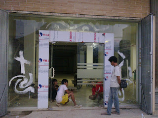

Kian berkembangnya dunia pembangunan, maka hadir banyak material penambah yang melengkapi keindahan sebuah banguanan. Tapi sekarang, penggunaan kaca semakin meluas.
Sekarang sudah hadir berbagai maca jenis kaca yang dapat ditemui, tiap kaca mempunyai fungsinya masing-masing. Dapat untuk system keamanan, estetika dan masih banyak yang bisa di temukan dari pemasangan kaca. Macam kaca-kaca hal yang demikian diantaranya ialah kaca tempered, kanopi kaca, kaca frameless, kaca cermin, railing kaca dan masih banyak ragam kaca lainnya yang dapat anda dapatakan dan anda aplikasikan pada bangunan. Tak hanya material kaca kini juga terdapat material kayu atau parket lantai kayu jati. Berikut ini sedikit penjelasan mengenai beragam jenis kaca dan fungsi kaca dan juga parket lantai kayu jati yang dapat anda dapatkan.
Distributor & Supplier Partisi Kaca di Pacitan
Partisi kaca dijumpai di perkantoran modern atau perbelanjaan. Tarif ini tentu bukan tanpa alasan. Yang pertama, tarif pembuatan dan pemasangan partisi kaca Pacitan jauh lebih murah dibandingi dengan partisi yang terbuat dari batu bata. Belum lagi biaya pemasangan yang tak murah. Alasan yang kedua, partisi kaca Pacitan ini ruangan terlihat amat minimalis. Ini pantas dengan konsep atau desain properti dikala ini. Alasan yang ketiga, partisi kaca Pacitan ini tak menghabiskan space. Akan tapi, Anda wajib selektif dalam hal memilih kaca untuk partisi. Kecuali, Anda harus amati kaca yang diterapkan. Sebab juga dengan ragam kaca. macam kaca ini privacy ruangan yang disekat. Ada kaca transparan, semi transparan, dan juga kaca cemin yang membuat ruangan sangat privat. Jikalau anda kesulitan untuk memasang dinding kaca penyekat, dis.or.id menyediakan jasa pemasangan dinding kaca penyekat untuk kamar mandi rumah anda.
Info Pemesanan Selengkapnaya
Google Maps: https://www.google.com/maps/d/viewer?mid=1R8kzChlMY2QK17rdE2QwzgHqdyqkVgbb&ll=-7.27380280025364%2C112.65243155000007&z=18
Note: https://www.facebook.com/notes/distributor-of-industrial-supply/pabrik-supplier-partisi-kaca-kamar-mandi-kantor-r-tamu-dlsb/1785723915060821/
Event: https://www.facebook.com/events/538733799826380/
Distributor & Supplier Kaca Shower
Kaca shower yakni kotak atau alat yang berfungsi sebagai penyekat ruang khusus untuk kamar mandi. Salah satu metode yang dapat dipakai untuk menjadikan kamar mandi yang selalu bersih adalah mengaplikasikan shower sebab metode pembersihannya memang jauh lebih praktis dibanding dengan yang memakai konsep bak mandi. Kaca shower ini dapat menjadi dan memiliki skor estetika tersendiri karena dengan memasangnya tentu kamar mandi anda akan menonjol lebih cantik dan mewah layknya kamar mani hotel. Jadi sistemnya jauh lebih praktis sebab tidak perlu menyiapkan bahan sendiri untuk membuat sekat ruang. Ada sebagian alasan kenapa Pintu Kaca Shower banyak dipakai salah satunya adalah kaca lebih nampak bersih dan rapi dan juga lebih mudah dalam perawatannya.
Tidak anda memerlukan kaca shower anda bisa mengunjungi segera dis.or.id. Disana tersedi kaca shower dengan pelbagai ukuran dan juga harga yang juga cukup terjangkau. Tidak terbaik dan harga relatif murah.
Distributor, Supplier & Jasa Pasang Kanopi Kaca
Pintu Kaca Shower pada kamar mandi merupakan salah satu pilihan yang bagus untuk desain interior kamar mandi modern. Bila akan memberikan kesan lapang saat berada di kamar mandi, mandi dengan shower akan memberikan kesejukan tersendiri dibanding kamar mandi dengan bak mandi. Dan sensasi mandi menjadi lebih asik untuk dirasakan. Jadi telah tidak heran lagi semua orang berharap mencari harga yang amat kompetitif untuk menyesuaikan budget atau anggaran mereka masing – masing untuk membikin produk canopy kaca. Disinilah letak perbedaan optis yang utama antara akrilik (acrylic) dengan kaca. Kalau tembus pandang, kaca mengabsorpsi sinar yang masuk sehingga semakin tebal kaca karenanya semakin sedikit cahaya yang dapat melewatinya, maka sifat transparannya makin berkurang.|Di samping pintu kaca shower akan membikin kamar mandi kecil tampak lebih besar.
Dis.or.id dapat menolong anda yang mau memasang atap kaca skylight pada gedung, dengan beraneka kelebihan yang dapat anda dapatkan dengan memanfaatkan jasa yang di tawarkan dis.or.id. Disana anda bisa mendapatkan atap kanopi kaca dengan mutu terbaik dan harga relatif murah. Anda juga bisa memenfaatkan jasa pemasangan atap kanopi kaca dengan semua jenis kaca yang anda butuhkan yang sesuai dengan kriteria atap kanopi. Banyak bangunan seperti gedung perkantoran, perumahan, ruko dan apartement yang menerapkan kanopi kaca tempered. Sesudah kaca untuk atap kanopi cukup digemari. Tidak anda sedang mencari kanopi kaca, anda bisa seketika mengunjungi dis.or.id.
Jasa Maintenance Kaca

Jasa maintenance kaca telah menjadi opsi tepat kalau Anda ingin melakukan perawatan gedung yang terbuat dari kaca. Dengan kian berjalan nya waktu tentu gedung yang memiliki bahan kaca pada sisinya membutuhkan perawatn khusus agar tetap awet dan bendung lama. Jasa maimtenence kaca menyediakan layanan pembersihan kaca gedung serta koreksi kaca gedung yang rusak, pecah dan tak cocok lagi untuk di gunakan. Salah satunya pelayanan berupa pembersihan gedung yang terbuat dari kaca.
Dis.or.id menyiapkan seluruh variasi kaca pantas kebutuhan ketika ini.
Dis.or.id memahami kian banyak gedung pencakar langit dengan betuk yang berbeda-beda. Disana anda bisa memanfaatkan jasa maintenance kaca dengan daya spesialis yang sanggup membersihkan gedung kaca dengan produk pembersih kaca apa yang terbaik untuk menghilangkan kotoran dan kusam. Jika spesialis juga betul-betul menentukan. Oleh karena itu, dis.or.id hanya memilih orang-orang yang benar-benar profesional dan sudah memiliki pengalaman dalam hal maintenance kaca.
Jasa Pemasangan Kaca Tempered

Kaca Tempered yakni salah satu jenis kaca dari sekian banyak variasi kaca yang kerap kali dipakai untuk jendela, pintu, dan partisi. Disana anda dapat memanfaatkan jasa maintenance kaca dengan tenaga spesialis yang mampu membersihkan gedung kaca dengan produk pembersih kaca apa yang terbaik untuk menghilangkan kotoran dan kusam. Selain itu saja. Banyak komponen properti yang bisa dibuat dengan bahan berupa kaca tempered. Tetapi dahulu cuma gedung perkantoran atau sentra perbelanjaan modern saja yang menggunakan jenis kaca ini, sekarang rumah hunian juga telah dibangun dengan kaca tempered. Selain ini tidak lain sebab semakin banyak orang yang memahami mutu serta keunggulan dari kaca tempered ini.
Sementara itu, untuk hunian, kanopi dan kamar mandi menjadi komponen yang paling menarik seandainya dihasilkan dari bahan kaca tempered. Selain kekuatan pakar yang dimiliki oleh dis yakni yang professional dan berpengalaman. Tak saat ini anda sedang berharap membangun suatu bangunan atau gedung, anda dapat memanfaatkan kaca tempered untuk diterapkan lantas ke semua ragam bidang. Dis.or.id menawarkan jasa pemasangan kaca tempered sebab kami mempunyai alat yang komplit.
Distributor & Supplier Pintu Kaca

Sekarang telah hadir ratusan pintu kaca dengan desain yang berbeda-beda yang bisa di buat dan di pesan, entah itu pintu kaca frameless (tanpa pigura) atau pintu kaca dengan frame. Banyak orang yang lebih menyukai dengan contoh pintu kaca minimalis, yaitu pintu kaca frameless. Tersedia juga aluminium dan kayu bila Anda mau memiliki pintu kaca dengan bingkai. Sekarang hal yang demikian bisa terbuat dari kayu atau aluminum. Desain hal yang demikian dapat disesuaikan dengan konsep properti Anda. sebagian macam kaca yang paling sering diterapkan untuk membuat pintu kaca, mulai dari variasi kaca tempered sampai kaca non-tempered. Dalam hal ini, terdapat beberapa macam kaca dengan mutu yang terbaik. Kini paling banyak diminati dikala ini ialah kaca tempered karena jauh lebih kuat dan bendung lama.
Dis.or id siap menolong anda untuk membuatkan pintu kaca idaman anda. Dengan energi pakar yang sudah sangat handal dalam membikin beraneka teladan pintu kaca.
Terdapat juga opsi lain berapa kaca non-tempered yang harganya relatif lebih murah. Anda dapat memilih kaca tempered yang sekarang ini sedang naik daun.
Jual Kaca Cermin

Kaca cermin bisa diciptakan aksesoris untuk mempercantik interior rumah Anda. Lihat saja banyak produk cermin yang dijadikan dengan desain unik dan menarik. Sekarang, cermin tidak hanya berbentuk persegi saja. Anda dapat tentukan desain seperti apa yang Anda inginkan. Salah satunya, kaca cermin ini bersifat refletif. Jadi, Anda mempunyai banyak opsi untuk menetapkan cermin yang Anda pilih benar-benar bisa mempercantik interior rumah Anda. Untuk membikin ruangan private, karenanya kaca ini transparan kalau dipandang dari dalam. Kini perlu dipandang juga ialah apakah Anda ingin mempunyai kaca cermin desain minimalis atau yang elegan.
Artinya, cermin tersebut tak memiliki pigura atau frame. Pun, ada juga furniture berupa pintu yang terbuat dari kaca cermin. Atau barangkali Anda mengharapkan kaca cermin yang segera bisa ditempel pada komponen furniture tertentu seperti pintu lemari. Sementara itu, Anda yang berada di dalam ruangan dapat mengamati orang lain yang ada di luar. Atau Anda bisa buat pintu kaca cermin. Jadi, orang di luar tak bisa melihat Anda berada di dalam. Harga yang terjangkau dan kwalitas terbaik yaitu ciri khas dari dis.or.id.
Jasa Pemasangan Railing Kaca

Railing kaca dapat membikin rumah Anda semacam itu nampak minimalis. Mungkin hal ini disebabkan semakin banyak pemilik rumah yang ingin menunjukkan sebuah desain interior rumah yang benar-benar minimalis. Selain ini disebabkan kian banyak permintaan terhadap railing ini. Bahkan aksesoris seperti pada pegangan tangga bahkan tak terbuat dari bahan kayu lagi namun kaca dan aluminum. Dalam hal kaca, Anda dapat memilih kaca tempered. Kaca ragam yang satu ini telah terkenal dengan ketahanannya. Malahan juga bahan yang digunakan.
Dalam hal ini, Anda bisa memutuskan sendiri berapa ketebalan dari kaca yang dipakai hal yang demikian. Anda bisa pertimbangkan untuk mengaplikasikan kaca tempered. Ini ragam kaca yang sungguh-sungguh kuat. Jika itu, kaca ini dapat pecah tetapi tidak menimbulkan pecahan yang runcing tetapi pecahan kecil-kecil dan lembut. Dikatakan sungguh-sungguh aman lantaran kaca tempered tidak memunculkan pecahan yang runcing dikala tiba-tiba kaca pecah entah itu akibat kecelakaan atau musibah seperti gempa. Pecahannya amat kecil dan lembut sehingga tidak akan melukai siapapun yang terkena pecahan. Sekarang pasti, railing kaca ini menjadi opsi yang tepat. Bila memberikan kesan minimalis pada interior rumah, ini juga membuat rumah Anda kelihatan lebih nyaman untuk dibuat tempat tinggal.
Harga yang betul-betul ekonomis serta kwalitas terbaik yang sudah terjamin membikin anda tidak akan menyesal membeli railing kaca di dis.or.id. Tentu dengan harga yang murah namun tetap berkelas.
Distributor & Supplier Pintu Lipat Kaca

Sebab keunggulan yang dimiliki tersebut, Anda pasti berdaya upaya harga pintu kaca lipat frameless ini mahal. Pintu lipat kaca diterapkan ketika ruangan diaplikasikan untuk hal yang privacy. Anda bisa mencari figur pintu lipat kaca tempered minimalis lainnya. Namun diakui bahwasannya ada tipe kaca yang harganya di bawah kaca tempered. Tetapi, Sekiranya Anda hitung kembali, selisih harganya tidaklah terlalu banyak.
Harga pintu kaca lipat frameless ini sangat dipengaruhi oleh ukuran lebar dan tingginya pintu. Namun bukan itu saja, aksesoris komplemen juga berpengaruh. Anda patut mempertimbangkan aksesoris yang melengkapi pintu kaca lipat memiliki kwalitas terbaik, seperti figur hinges. Hinges yakni aksesoris vital, sebab aksesoris inilah yang berperan untuk menopang berat pintu kaca lipat. Jadi, bukan hanya pintu saja yang berupa kaca, tetapi juga seluruh sekat ruangan.
Jasa Pemasangan Kubikel Toilet

Kubikel toilet memiliki desain yang mewah dan elegan sehingga siapa saja yang memandangnya pasti akan tertarik, tidak hanya itu kubikel kaca memberikan kesan bersih, rapid an tertata. Kubikel kamar kecil dapat di gunakan di WC mall.
Dengan menggunakan kamar kecil kubikel tentnya toilet yang anda miliki Menonjol lebih elegan dan mewan jauh dari kesan dekil. Disana terdapat kubikel kaca dengan berbagai ukuran dan ketebalan dengan harga yang cukup terjagkau di bandingkan dengan tempat lainnya. Karena disana terdapat kubikel WC dengan bermacam ukuran serta ketebalan kaca.
Tersedia bermacam-macam ukuran serta ketebalan dari kubikel yang dapat anda pilih cocok dengan yang anda inginkan.
Sebab disana terdapat beraneka ukuran kubikel kamar kecil yang dapat anda jadikan opsi untuk hunian atau temap usaha anda. Justru embun dapat menempel di kaca dan lambat laun dapat membuat kaca tak sejernih semula. Bila anda ketika ini sedang memerlukan kaca shower untuk kamar mandi, segera saja kunjungi dis.or.id untuk melakukakn pemesanan maupun menanyakan detail harga dari kaca shower. Kaca shower yang di jual di jamin kaca shower yang mempunyai mutu terbaik dan berkwalitas tinggi.